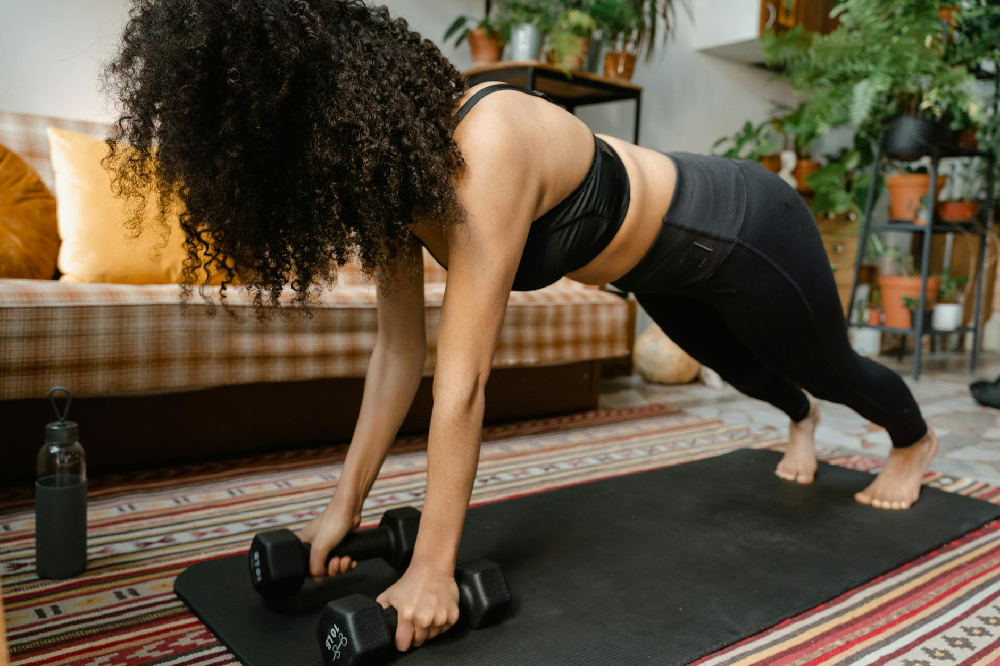

Can You Build Muscle With Just Bodyweight? Yes, Here's How!
Key takeaways
- The idea of building significant muscle often brings to mind heavy barbells and complex gym equipment.
- But what if you're short on time, space, or budget?
- Focus on: Can You Really Build Muscle Without Weights?.

Can You Really Build Muscle Without Weights?
The idea of building significant muscle often brings to mind heavy barbells and complex gym equipment. But what if you're short on time, space, or budget? Can you still achieve your strength goals using just your own bodyweight? The answer is a resounding yes! With the right approach, bodyweight exercises can be incredibly effective for building muscle, improving strength, and boosting your overall fitness.
This guide will walk you through how to leverage your bodyweight for muscle growth, focusing on practical, no-equipment movement plans you can start today. Educational only — not medical advice.
The Science Behind Bodyweight Muscle Growth
Muscle growth, or hypertrophy, occurs when your muscles are challenged beyond their current capacity, leading to microscopic tears. As these tears repair, the muscle fibers become thicker and stronger. Bodyweight exercises provide resistance by forcing your muscles to work against gravity. By manipulating variables like repetition, tempo, and exercise difficulty, you can create sufficient stimulus for muscle growth, even without external weights.
Key Principles for Bodyweight Muscle Building
To maximize muscle gain with bodyweight training, focus on these core principles:
1. Progressive Overload
This is the cornerstone of muscle growth. You need to continually challenge your muscles to adapt. With bodyweight, this means making exercises harder over time. For example, if standard push-ups become easy, you can progress to decline push-ups, clap push-ups, or one-arm push-up variations. This principle applies to all bodyweight movements, from squats to lunges.
2. Proper Form and Technique
Executing exercises with correct form is crucial for targeting the right muscles and preventing injuries. Focus on controlled movements rather than speed. For instance, during squats, ensure your chest is up, your back is straight, and you descend until your thighs are at least parallel to the floor.
3. Consistency and Frequency
Aim to train each major muscle group 2-3 times per week, allowing for adequate rest and recovery between sessions. Consistency is key to seeing results. Even 20-30 minutes of focused training several times a week can make a significant difference.
4. Nutrition and Recovery
Muscle growth doesn't happen solely in the gym (or living room!). Adequate protein intake is essential for muscle repair and synthesis. Aim for around 0.7-1 gram of protein per pound of body weight. Sufficient sleep (7-9 hours) is also critical for muscle recovery and hormone regulation.
No-Equipment Workout Plan Examples
Here are a few sample routines you can adapt. Remember to listen to your body and adjust as needed.
Full Body Workout (Beginner/Intermediate)
- Warm-up: 5 minutes of light cardio (jogging in place, jumping jacks) and dynamic stretching.
- Squats: 3 sets of 10-15 repetitions.
- Push-ups: 3 sets of as many reps as possible (AMRAP) with good form. (Modify on knees if needed).
- Lunges: 3 sets of 10-12 repetitions per leg.
- Plank: 3 sets, hold for 30-60 seconds.
- Glute Bridges: 3 sets of 15-20 repetitions.
- Cool-down: 5 minutes of static stretching.
This routine hits major muscle groups and can be performed 3 times a week on non-consecutive days. You can find more variations on effective bodyweight exercises.
Upper Body Focus
- Push-ups: Focus on variations like incline, decline, or wide-grip for different muscle emphasis. Aim for 3-4 sets of AMRAP.
- Pike Push-ups: Targets shoulders. 3 sets of 8-12 reps.
- Triceps Dips: Use a sturdy chair or step. 3 sets of 10-15 reps.
- Superman: For the back. 3 sets of 15-20 reps.
- Plank Variations: Side planks, plank jacks.
Incorporate this into your week, perhaps on days you're not doing the full-body routine, or swap out exercises. Explore advanced techniques like plyometric bodyweight training for explosive power.
Lower Body & Core Focus
- Squats: Progress to jump squats or pistol squat progressions. 3-4 sets of 12-20 reps.
- Lunges: Try walking lunges or reverse lunges. 3-4 sets of 10-15 reps per leg.
- Calf Raises: 3 sets of 20-25 reps.
- Leg Raises: For lower abs. 3 sets of 15-20 reps.
- Crunches/Bicycle Crunches: 3 sets of 15-25 reps.
Remember to focus on increasing reps or trying harder variations as you get stronger. Check out these tips for improving squat form.
Real-Life Example: Sarah's Home Transformation
Sarah, a busy mom of two, wanted to get stronger but had limited time and no gym access. She committed to a 3-day-a-week bodyweight routine, focusing on progressive overload. Initially, she could only do 5 knee push-ups. After 8 weeks, by consistently increasing her reps and trying incline push-ups, she could perform 15 standard push-ups. She also incorporated jump squats and longer plank holds. Within three months, she noticed a significant increase in her upper body and core strength, and her clothes fit better. Her success highlights the power of consistent, challenging bodyweight training.
Actionable Checklist: Start Your Bodyweight Journey
- Assess Your Current Level: See how many reps you can do of basic exercises like push-ups, squats, and planks.
- Choose 1-2 Workouts: Select a routine that fits your schedule and fitness level.
- Schedule Your Workouts: Block out time in your calendar 3 times a week.
- Focus on Form: Watch videos and practice perfect technique.
- Plan for Progression: Decide how you'll make exercises harder (more reps, harder variations).
- Prioritize Nutrition: Ensure you're getting enough protein and water.
- Get Enough Sleep: Aim for 7-9 hours per night.
Common Mistakes to Avoid
- Not Progressing: Doing the same easy workout week after week won't lead to muscle growth.
- Poor Form: Sacrificing technique for more reps can lead to injury and ineffective training.
- Overtraining: Not allowing enough rest days can hinder recovery and muscle repair.
- Neglecting Nutrition: Insufficient protein or calories will limit muscle-building potential.
- Lack of Consistency: Sporadic workouts yield minimal results.
For more advanced techniques, consider exploring calisthenics progressions.
Frequently Asked Questions
How often should I do bodyweight workouts?
Aim for 3-4 times per week, ensuring you have rest days for muscle recovery. You can train different muscle groups on different days or do full-body workouts.
Can I build muscle if I'm a beginner?
Absolutely! Bodyweight exercises are excellent for beginners. Start with basic movements and focus on mastering the form before progressing.
How long does it take to see results?
Visible results vary, but many people start noticing strength gains within 4-6 weeks. Significant muscle definition may take longer, typically several months of consistent training and proper nutrition.
Do I need to track my workouts?
While not strictly mandatory, tracking your reps, sets, and exercise variations helps ensure you're applying progressive overload, which is key for muscle growth. You can use a notebook or an app. Learn more about tracking your fitness progress.
Start Building Muscle Today!
Building muscle with bodyweight exercises is achievable, accessible, and incredibly rewarding. By focusing on progressive overload, proper form, nutrition, and consistency, you can transform your physique and strength without ever stepping into a gym. Start with the basics, challenge yourself, and enjoy the journey to a stronger, healthier you!
More in home-workouts
Can You Build Muscle With No Equipment? Yes, Here's How!
Discover how to build muscle at home without any gym equipment. Learn effective bodyweight exercises and workout plans for a stronger you.
Read more →
Can You Get Fit Without Gym Equipment?
Discover how to achieve your fitness goals with effective home workouts that require no gym equipment. Learn practical tips and movement pla
Read more →Related posts
Can You Build Muscle With No Equipment? Yes, Here's How!
Discover how to build muscle at home without any gym equipment. Learn effective bodyweight exercises and workout plans for a stronger you.
Read more →Can You Get Fit Without Gym Equipment?
Discover how to achieve your fitness goals with effective home workouts that require no gym equipment. Learn practical tips and movement pla
Read more →What Foods Lower Inflammation Naturally?
Discover everyday foods that can help reduce inflammation in your body. Learn simple dietary changes for a healthier you.
Read more →